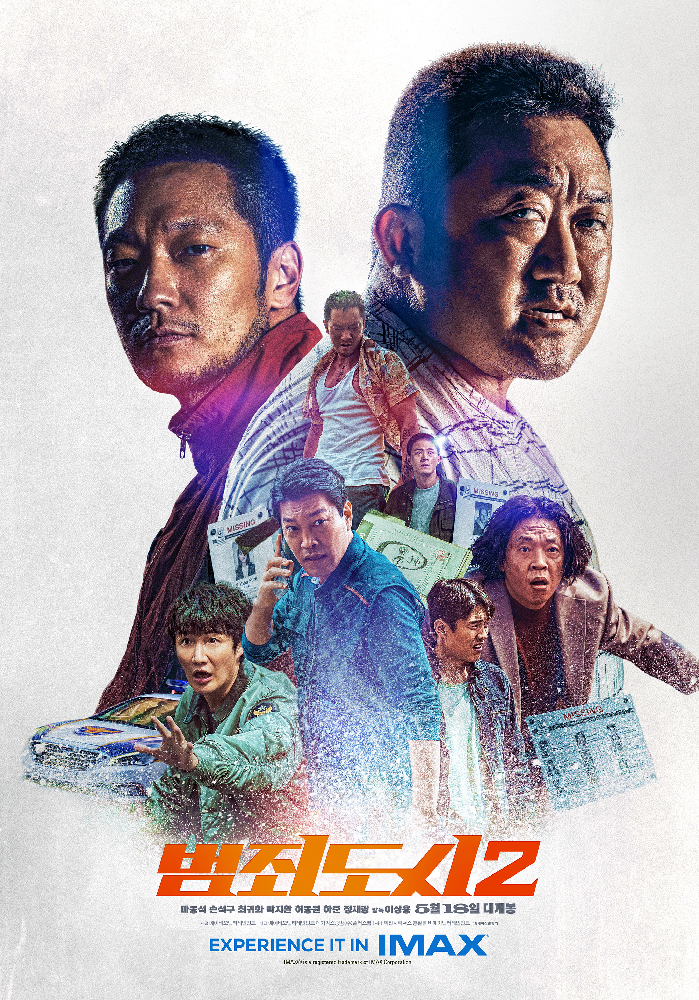
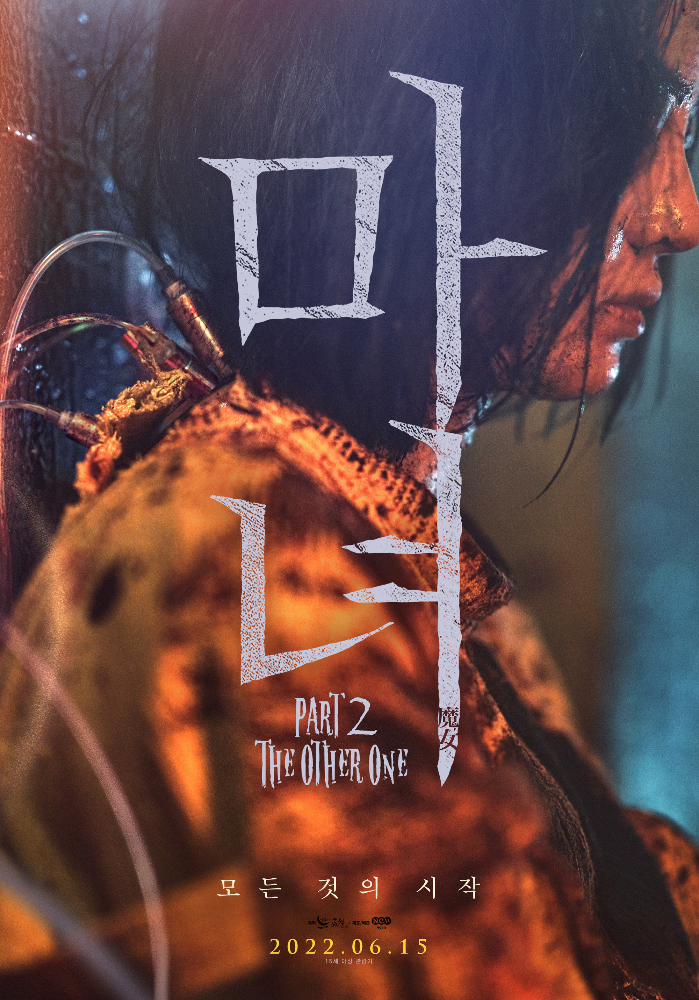
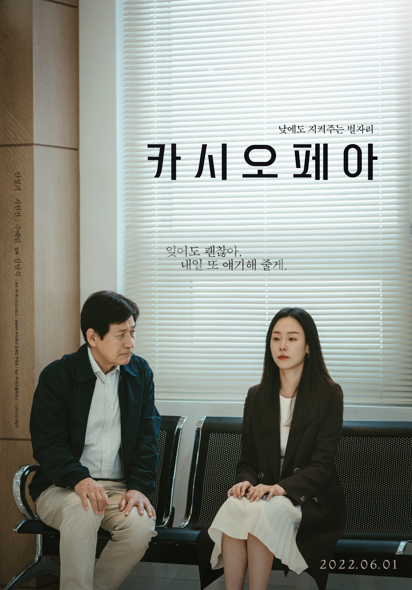

최근 방영작
-
No.1

-
No.2
 -
No.3

추천 영화
-
브로커
감독
: 고레에다 히로카즈
배우
: 송강호 , 강동원 , 배두나 , 이지은 , 이주영
장르
: 드라마
기본
: 12세 이상, 129분, 한국
개봉
: 2022.06.08
줄거리
: 세탁소를 운영하지만 늘 빚에 시달리는 ‘상현’(송강호)과 베이비 박스 시설에서 일하는 보육원 출신의 ‘동수’(강동원). 거센 비가 내리는 어느 날 밤, 그들은 베이비 박스에 놓인 한 아기를 몰래 데려간다.
하지만 이튿날, 생각지 못하게 엄마 ‘소영’(이지은)이 아기 ‘우성’을 찾으러 돌아온다. 아기가 사라진 것을 안 소영이 경찰에 신고하려 하자 솔직하게 털어놓는 두 사람.
우성이를 잘 키울 적임자를 찾아 주기 위해서 그랬다는 변명이 기가 막히지만 소영은 우성이의 새 부모를 찾는 여정에 상현, 동수와 함께하기로 한다.
한편 이 모든 과정을 지켜본 형사 ‘수진’(배두나)과 후배 ‘이형사’(이주영). 이들을 현행범으로 잡고 반 년째 이어온 수사를 마무리하기 위해 조용히 뒤를 쫓는다.
베이비 박스, 그곳에서 의도치 않게 만난 이들의 예기치 못한 특별한 여정이 시작된다. -

마녀(魔女) Part2. The Other One
감독
: 박훈정
배우
: 신시아 , 박은빈 , 서은수 , 진구 , 성유빈 , 조민수 , 이종석 , 김다미
장르
: 액션
기본
: 15세 이상, 137분, 한국
개봉
: 2022.06.15
줄거리
: 통제불능의 존재가 세상 밖으로 나왔다! ‘자윤’이 사라진 뒤, 정체불명의 집단의 무차별 습격으로 마녀 프로젝트가 진행되고 있는 ‘아크’가 초토화된다.
그곳에서 홀로 살아남은 ‘소녀’는 생애 처음 세상 밖으로 발을 내딛고 우연히 만난 ‘경희’의 도움으로 농장에서 지내며 따뜻한 일상에 적응해간다.
한편, ‘소녀’가 망실되자 행방을 쫓는 책임자 ‘장’과 마녀 프로젝트의 창시자 ‘백총괄’의 지령을 받고 제거에 나선 본사 요원 ‘조현’, ‘경희’의 농장 소유권을 노리는 조직의 보스 ‘용두’와 상해에서 온 의문의 4인방까지
각기 다른 목적을 지닌 세력이 하나 둘 모여들기 시작하면서 ‘소녀’ 안에 숨겨진 본성이 깨어나는데…
모든 것의 시작, 더욱 거대하고 강력해진 마녀가 온다. -

카시오페아
감독
: 신연식
배우
: 안성기 , 서현진 , 주예림
장르
: 드라마
기본
: 12세 이상, 101분, 한국
개봉
: 2022.06.01
줄거리
: 이혼 후 변호사, 엄마로 완벽한 삶을 살아가려고 노력하는 수진은 하나뿐인 딸 지나의 미국 유학을 준비하고 있다.
정신없이 바쁜 수진을 위해 아빠 인우가 손녀를 돌보게 되면서 세 사람은 함께 살게 된다.
얼마 후 수진은 교통사고를 당하고, 병원에서 알츠하이머라는 뜻밖의 결과를 듣게 된다.
사랑하는 딸을 잊을까 봐 두려워하는 수진을 위해 아빠 인우는 수진의 곁을 지키고, 기억을 잊어도 살아갈 수 있도록 이들 부녀만의 애틋한 동행이 시작된다.